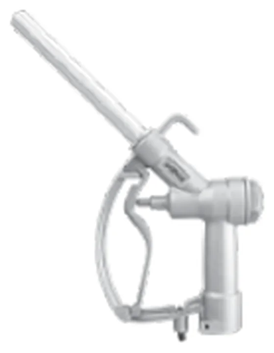

GROZ · Fuel & DEF Handling
Fuel Control Nozzles Manual
CAT NR FCN/S/0-1/0-1/N · ORD NR 45591
| CAT NR (catalogue number) | FCN/S/0-1/0-1/N |
|---|---|
| ORD NR (order number) | 45591 |
| Box quantity | 20 |
| Variant (printed column) | NPT THREADS |
| For use with | Diesel |
| Inlet threads | 1" (F) |
| Max. flow rate GPM | 20 |
| Max. flow rate LPM | 75 |
| Spout dia. (ID) (inch) | 0.86 |
| Spout dia. (ID) (mm) | 22 |
| Spout dia. (OD) (inch) | 1 |
| Spout dia. (OD) (mm) | 25 |
| Table section | NOZZLES WITH SWIVEL - STRAIGHT SPOUT |
Ask for a quote The catalogue PDF, page 283
“Ask for a quote” opens this product in the catalogue: add it to your quote and send it. Buyers from Africa, the Gulf and worldwide are welcome; prices in USD, EUR or INR.
From the GROZ Fluid Handling CC-07 catalogue. Not yet verified: these details were read from the printed catalogue automatically; check the catalogue page before ordering.